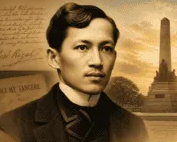

José Rizal's Character Development
June 19, 1861 · December 30, 1896
Dr. José Protasio Rizal Mercado y Alonso Realonda was born on June 19, 1861 in Calamba, Laguna, the seventh of eleven children. A physician, novelist, poet, sculptor, linguist, and political reformer, Rizal is recognized as the national hero of the Philippines.
Fluent in over twenty languages and trained in medicine across Europe, he wielded the pen rather than the sword — writing two landmark novels that shook the foundations of Spanish colonial rule.
Rizal's character and heroism emerged from a complex interplay of biological inheritance, environmental conditions, and formative experiences. His innate intellectual gifts were shaped by a colonial context that gave them a moral purpose; his shortcomings were the humanizing shadows that made his virtues shine more brightly.
This digital timeline blog traces the arc of his becoming — from a precocious child in Calamba to a martyr whose final poem sealed the soul of a nation.
Heredity, genetics, and physical constitution
Rizal was born into the Mercado-Rizal family — a lineage of mixed Chinese, Spanish, Filipino, and Japanese ancestry. This rich genetic heritage endowed him with extraordinary intellectual capacity, exceptional memory, and a deep sensitivity to beauty and injustice.
From his father, Francisco Engracio Rizal Mercado, he inherited tenacity and practical discipline. From his mother, Teodora Alonso Realonda — a deeply educated woman who taught him his first letters — he inherited literary sensibility and moral courage.
So precocious was the young Rizal that by age two he could already read, and by eight had composed his first poem — suggesting not just environmental encouragement but genuine inherited cognitive gifts that set him apart.
Standing at approximately 4'11" (150 cm), Rizal was notably small in stature — a physical reality that, far from diminishing him, seemed to fuel his determination to prove himself through intellect and moral authority.
He was widely noted for his piercing, expressive eyes and composed demeanor — features that commanded attention in any room. His physical appearance became a symbol in itself: here was a man whose power was entirely of the mind and spirit.
As a trained physician and ophthalmologist, Rizal brought a scientific and observant mind to social problems — approaching colonial injustice not as abstract idealism but as a diagnosis of systemic disease requiring evidence-based treatment.
Polyglot fluent in 20+ languages; earned medals at Ateneo; mastered medicine, law, and the natural sciences simultaneously.
Inherited creative gifts manifested in world-class literature, painting, clay sculpture, and poetry composed from childhood.
Despite small stature, Rizal practiced fencing, gymnastics, and martial discipline — turning perceived weakness into focused strength.
Medical training instilled an empirical, rational approach to advocacy — he observed, diagnosed, and prescribed solutions for Filipino society.
Family, education, and the colonial world that forged him
The Rizal household was a model of middle-class Filipino intellectual aspiration under colonial rule. His mother, despite later being unjustly imprisoned by Spanish authorities, instilled in all eleven children a love of learning, poetry, and God.
Growing up in Calamba, José witnessed firsthand the hacienda system that bound Filipino farmers to Spanish friars. The dispossession of his own family's land by Dominican friars became a formative wound — abstract injustice rendered viscerally personal.
The Philippines under 19th-century Spanish colonial rule was a society of rigid racial hierarchy. Peninsulares, or Spanish-born elites, dominated; Insulares occupied middle status; and Indios, or native Filipinos, were systematically marginalized by law, church, and commerce.
This context gave Rizal's genius a purpose. His brilliance alone might have secured comfort and status — but the colonial system's cruelties gave his gifts a direction: the liberation of his people through enlightened thought rather than armed revolt.
"He who does not love his own language is worse than an animal and smells worse than a fish."
— José RizalHis mother Teodora taught him reading, writing, and his first poems. The home environment was saturated with books, religious devotion, and intellectual ambition — rare for ilustrado families of the era.
Rizal excelled brilliantly, earning the highest honors and multiple gold medals. It was here that he first encountered Enlightenment ideals and developed his disciplined work ethic — as well as his first awareness of racial discrimination against Filipino students.
He found the atmosphere stagnant, the faculty biased toward Filipino students, and the scholastic method intellectually limiting. This dissatisfaction became the push that sent him to Europe — transforming frustration into revolutionary energy.
Enrolled at the Universidad Central de Madrid; studied ophthalmology under Louis de Wecker in Paris and Otto Becker in Heidelberg. Exposure to liberal European politics and Enlightenment thought transformed him into a conscious nationalist reformer.
The arc from exile to execution
Across Spain, Germany, France, England, and beyond, Rizal studied, wrote, and agitated. In London he annotated Antonio de Morga's Sucesos de las Islas Filipinas to recover suppressed Philippine history. In Europe he published his landmark novels and contributed to the reformist newspaper La Solidaridad.
Noli Me Tangere (1887) and El Filibusterismo (1891) — literary grenades thrown into the heart of colonial complacency, exposing Church corruption and the slow death of Filipino dignity.
Banished to the remote town of Dapitan in Mindanao, Rizal could have succumbed to despair. Instead, he flourished. He built a school, constructed a water system, practiced medicine among the poor, conducted scientific research, and corresponded with international scholars.
Dapitan revealed the full dimension of Rizal's heroism — not just the pen and the protest, but the quiet, daily work of nation-building at the grassroots level.
Implicated in the Katipunan uprising of 1896, Rizal was arrested, tried by a military court in a travesty of justice, and condemned to death. He was offered clemency if he would renounce his writings — he refused.
On December 30, 1896, at Bagumbayan, now Luneta Park, he was shot by a firing squad. His final poem, Mi Último Adiós, sealed his immortality in devastating beauty.
Born the seventh of eleven children to Francisco Rizal Mercado and Teodora Alonso. His extraordinary memory was evident before age three.
The martyrdom of three Filipino priests profoundly politicized the young Rizal, planting seeds of nationalist consciousness that would define his life's mission.
Left for Madrid without telling his parents — a secret escape that began a decade of intellectual transformation and reformist activism across Europe.
His first novel electrified the Filipino community and enraged Spanish colonial authorities. It became the most dangerous book in Philippine history.
The darker sequel pushed further — depicting revolution, not just reform. It showed Rizal's growing despair over peaceful change's limitations.
Founded La Liga Filipina; arrested the next day and exiled to Dapitan for four years. His quiet resistance there became the proof that a better Philippines was possible.
Martyred at 35. He reportedly turned at the moment of the volley so he would fall face upward, under the open sky — a final act of dignity. His death became the spark of the revolution he had tried to prevent.
Virtues, shortcomings, and the evolution of a man
Dared to name injustice in print when silence was the safer, easier path. His novels were published knowing they could cost him — and eventually did.
Believed in reform through education and persuasion rather than armed revolution — a principled stance he maintained even as events spiraled beyond his control.
His compassion extended to all — he practiced medicine for free among the poor of Dapitan, corresponded with international scholars, and saw no race as enemy.
Refused to compromise his convictions even when offered his life in exchange for recantation. His integrity was not conditional on safety.
"The youth is the hope of the fatherland."
— José RizalThe young Rizal who left for Spain in 1882 was brilliant but largely apolitical — a talented student seeking professional advancement. The mature Rizal of Dapitan was calmer, more inward, and wiser about the limits of literary revolution.
Qualitative assessment based on historical accounts and biography.
Challenges that forged his acts of heroism
Rizal faced challenges that would have crushed lesser men. Racial discrimination and colonial prejudice shaped the very conditions he criticized — yet experiencing it firsthand gave his reform writings their moral authority and emotional force.
His family suffered for his activism. His mother was unjustly imprisoned; his brother arrested; friends deported or executed. Every publication brought danger not just to himself but to those he loved — a burden of moral anguish that pervades his correspondence.
Financial hardship was chronic throughout his European years. He lived frugally, funding his education and publications through self-sacrifice. In Dapitan he was a prisoner in everything but name, cut off from the intellectual world that nourished him.
It was precisely because Rizal suffered with his people — not from a safe distance — that his heroism carried weight. He was not an armchair revolutionary. He bore the consequences of every word he wrote.
The pitfalls refined him. Exile in Dapitan, which might have broken his spirit, instead revealed the teacher, the healer, the scientist, and the community builder within him. He built the Philippines he dreamed of — in miniature, in one small town, one patient at a time.
And his execution, which his enemies intended as a silencing, became the loudest possible affirmation of his cause — transforming literary activism into a revolution, and a man into a nation's soul.
"I would like to show those who deprive our people of their rights that we know how to die for our duty and convictions. What matters death, if one dies for what one loves, for the native land, for those one loves?"
— José Rizal, in a letter before his executionDapitan stripped away illusions of quick reform and replaced them with the slow, patient work of grassroots nation-building — a more enduring heroism than protest alone.
His novels outlived him. Noli and Fili became the philosophical backbone of the independence movement — his pen struck blows no rifle could.
His execution, intended to silence dissent, instead ignited the Philippine Revolution. The Spanish miscalculated: martyrs multiply the ideas they die for.
Summary of findings and reflection on his enduring significance
Rizal's character was the product of an irreducible interplay between biology and environment. His inherited intellect, artistic sensitivity, and physical resolve were the raw material; colonial injustice, family suffering, educational exile, and the Propaganda Movement were the forge. Neither alone would have produced the hero.
His virtues — intellectual courage, non-violence, humanism, moral integrity — were balanced by real shortcomings: ambivalence about revolution, occasional elitism, complex personal entanglements. These imperfections did not diminish him. They made him human, and his heroism thus achievable — a model, not a myth.
More than a century after his execution, Rizal remains the clearest mirror the Filipino people have of themselves — their capacity for brilliance, sacrifice, and the slow, unglamorous work of building a nation.
His legacy is not the monument at Luneta, nor the face on the peso bill. It is the reminder that heroism is not born — it is shaped. By inherited gifts meeting historical necessity. By personal suffering channeled into public purpose. By a life lived, however briefly, with full moral seriousness.
That shaping — and not just the outcome — is Rizal's truest lesson.